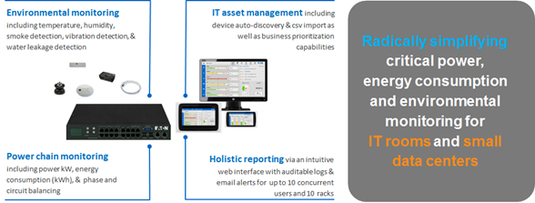
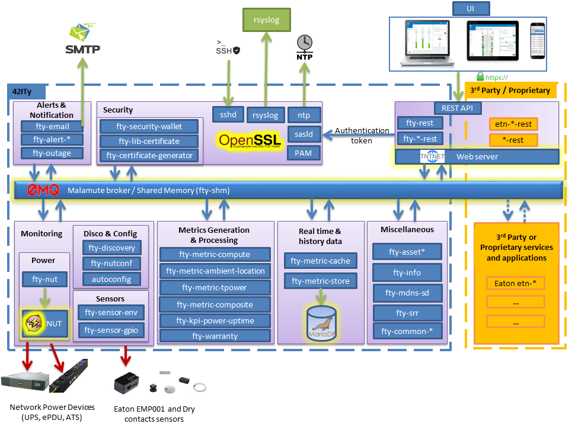
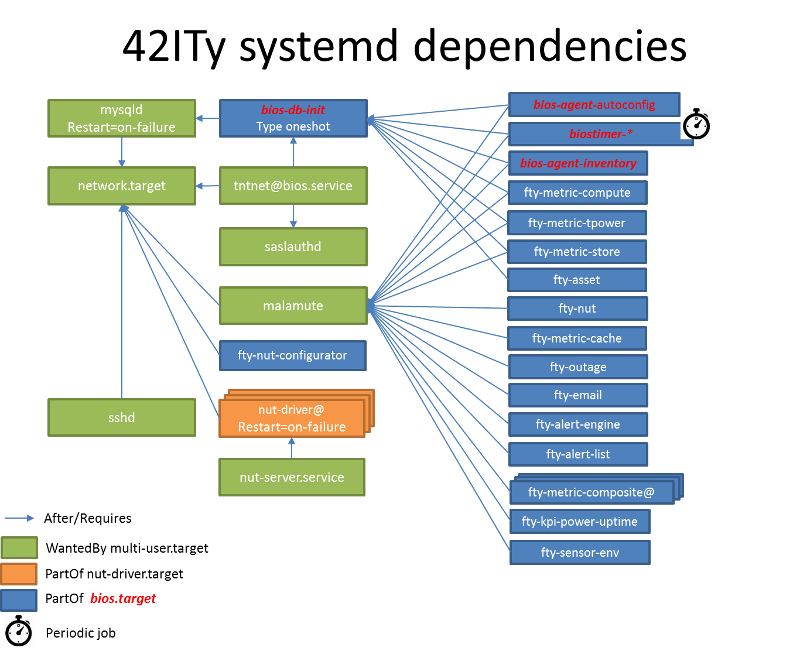

General overview
The 42ITy™ project promotes the global development, distribution and adoption of the 42ITy™ platform as a next generation Data Center Service Optimization enablement platform.
The goal is to serve developers, users and the entire data center ecosystem by providing a set of shared resources to grow the adoption of 42ITy™ as the only open source, next generation Data Center Service Optimization enablement platform.
The initial 42ITy™ platform is a result of more than 3 years of R&D effort by Eaton Corporation provided to the community. While Eaton continues to be a key contributor to 42ITy™, the community is already growing. Please read the Contributor guide to find out how you can contribute.
The 42ITy™ platform allows to connect together various software components to:
-
gather and store monitoring data from devices,
-
process these data to produce trends and metrics,
-
provide interaction to users, through a web user interface,
-
provide interaction to developers and 3rd party software, through a REST API.
A typical integration, which serves as a reference implementation, is Eaton Intelligent Power Controller:

Current features and capabilities
-
Power device monitoring & metrics (rack PDUs, UPSs, ATSs,…)
-
Environmental monitoring & metrics (temp., humidity, dew point,…)
-
Historic & real time data
-
Composite & Datacenter or IT room level metrics
-
Open (REST API) communication interface
-
Micro-services & plug-in architecture
Future availability
-
Builds (images & packages) provided for both ARM and x86 platforms
-
Easy & Intuitive standards based UI (AngularJS, Bootstrap)
-
Simplified asset management
Future features and capabilities
-
Scale solution to large data center & distributed enterprise monitoring
-
100s to 1000s of racks
-
-
Expanded 3rd party monitoring ecosystem
-
More 3rd party power device support
-
Genset monitoring
-
CRAC monitoring
-
3rd party sensors
-
-
More depending on the 42ITy™ Community and partners feedback and requests.
Technical overview
The 42ITy™ software platform is a Service Oriented Architecture (SOA), made of a collection of software packages communicating through a MOM (Message-oriented middleware), built around the ZeroMQ technology stack.
The software is divided in a set of independent components, called agent.

Because we expect an arbitrary number of agents to be connected together, 42ITy™ uses a central message broker called Malamute.
Malamute is built using the same ZeroMQ stack, so integrates with the code easily. The purpose of malamute is to abstract from maintaining peer-to-peer connections and to allow easy 1:N communication patterns without need to change the agent side.
At the moment there are three main patterns supported by Malamute broker:
-
PUB / SUB, Publish and Subscribe: there are agents publishing messages with some topic, where others can subscribe to them. Broker then ensures all messages are delivered to the right destination. Communication is asynchronous - each PUB call is queued immediately and sending does not block the code.
-
REQ / REP, Request and Reply: this is a directed 1:1 communication, usable for requesting some information from known place (persistence layer). It is synchronous, so blocking calling code until there is a result (or timeout).
-
Service: service is a dedicated agent, which can run in more instances spawned by broker on demand. This is suitable for long running tasks. This is not used in 42ITy™ currently.
MQ protocol overview
42ITy™ protocol consists of several layers:
-
Internet layer - raw libzmq/czmq sockets: this ensures messages are serialized, deserialized, working with sockets and abstracts the underlying OS layers (unix sockets, tcp sockets, …).
-
Transport layer - Malamute: this does ensures correct addressing, matching subscribers with published messages and services.
-
Application layer - fty-proto: this provides a minimal set of messages to encode and decode the main types of data flowing in the system.
Agent overview
Agents communicate through buses maintained by ZeroMQ library. Buses can use several backend technologies, most notably unix and classic TCP/IP sockets. So agents can be placed on the same machine or on arbitrary number of other machines (currently out of scope). Because basic messaging using zeromq messages (zmsg) is error prone with a lot of code duplication, 42ITy™ project uses serialization library called zproto. It defines a model of message in declarative XML language and code is generated using a template language called gsl.
Generated code does provide nice C API for manipulating with messages as well as a way how to encode/decode it to/from zmsg. Thus such generated representations can be easily sent through zeromq channels.
Actor model
Agents are built on top of the actor model. That means that each agent maintains its own state internally and communicate with the rest of the system by sending messages. The communication is asynchronous and agents are single threaded with the main loop. For cases where the single main loop is not enough due to performance reasons, agent can distribute workload to others using SERVICE pattern. However this is not used in current version of 42ITy™.
How to create a new agent
The fty-example repository is an example agent, provided with instructions and serving as a reference on how to create a new 42ITy™.
REST API communication interface
42ITy™ also exposes its data through a REST API.
Complete documentation using RAML is available:
42ITy™ software stack
42ITy™ external projects
42ITy™ foundations rely on several major opensource projects, to provide some generic core services, such as data storage, communication with devices, communication between agents, web user interface and REST API, and build added value on top of these.
Malamute
Malamute is the ZeroMQ Enterprise Messaging Broker, providing all the enterprise messaging patterns in one box.
42ITy™ uses Malamute as the broker connecting the different 42ITy™ agents (see internal sub-projects).
MariaDB - MySQL
MariaDB is one of the most popular database servers in the world, made by the original developers of MySQL and guaranteed to stay open source.
42ITy™ uses MariaDB to store the realtime data, gathered from devices, and processed metrics.
NUT - Network UPS Tools
NUT - Network UPS Tools is a project which provides support for a wide range of power devices, such as UPS, PDU and ATS.
42ITy™ uses NUT to gather data from network power devices.
Tntnet
Tntnet is a modular, multithreaded web application server for C++.
42ITy™ uses Tntnet to serve web user interface and REST API.
42ITy™ internal sub-projects
This chapter briefly presents the different sub-projects that forms the 42ITy™ platform. More detailed information can be found on the dedicated pages of these sub-projects.
Each of these sub-projects is available as a repository on 42ITy GitHub page.
fty-core
-
Description: fty-core implements the core and central functionalities for 42ITy.
-
Repository: https://github.com/42ity/fty-core
fty-proto
-
Description: fty-proto is the shared implementation of 42ITy™ core protocols, using Malamute and used by the different agents (assets, metrics, alerts).
-
Repository: https://github.com/42ity/fty-proto
fty-asset
-
Description: fty-asset is the agent in charge of managing information about assets.
-
Repository: https://github.com/42ity/fty-asset
fty-metric-compute
-
Description: fty-metric-compute provides computation services on metrics.
-
Repository: https://github.com/42ity/fty-metric-compute
fty-metric-store
-
Description: fty-metric-store provides the persistance layer for metrics.
-
Repository: https://github.com/42ity/fty-metric-store
fty-nut
-
Description: fty-nut is an agent that polls power devices (UPS and PDU) using NUT drivers, through NUT server (upsd). It collects current measurements and publishes them. It also collects static inventory data (assets) and publishes them.
-
Repository: https://github.com/42ity/fty-nut
fty-outage
-
Description: fty-outage is the agent that generates and sends alerts when a device does not communicate.
-
Repository: https://github.com/42ity/fty-outage
fty-metric-cache
-
Description: fty-metric-cache is the agent providing current values of any metric in the system.
-
Repository: https://github.com/42ity/fty-metric-cache
fty-email
-
Description: fty-email is the agent in charge of generating and sending email notifications.
-
Repository: https://github.com/42ity/fty-email
fty-sensor-env
-
Description: fty-sensor-env is the agent communicating with environmental sensors to gather temperature and humidity data.
-
Repository: https://github.com/42ity/fty-sensor-env
fty-metric-tpower
-
Description: fty-metric-tpower is the agent computing total datacenters, rooms, rows and racks power metrics from measurements.
-
Repository: https://github.com/42ity/fty-metric-tpower
fty-alert-engine
-
Description: fty-alert-engine is the agent that evaluates rules written in Lua and produces alerts accordingly.
-
Repository: https://github.com/42ity/fty-alert-engine
fty-alert-list
-
Description: fty-alert-list is the agent that provides information about active and resolved alerts.
-
Repository: https://github.com/42ity/fty-alert-list
fty-metric-composite
-
Description: fty-metric-composite is an agent that generates composite metrics, that is to say metrics which are computed from several other metrics. Rules are defined as scripts written in Lua.
-
Repository: https://github.com/42ity/fty-metric-composite
fty-kpi-power-uptime
-
Description: fty-kpi-power-uptime computes and publishes KPI (Key Performance Indicator) for data center power uptime, taking into account how long one of the main power sources was offline.
-
Repository: https://github.com/42ity/fty-kpi-power-uptime
fty-rest
-
Description: fty-rest is the component extending Tntnet and implementing 42ITy™ REST API.
-
Repository: https://github.com/42ity/fty-rest
Services dependencies
The systemd system and service manager is responsible for controlling how 42ITy™ services are started, stopped and otherwise managed. It uses an event-based and dependencies based approach to optimize how services are managed (started, stopped, reloaded).
The figure bellow illustrates the dependencies relationships for services running on 42ITy™.
